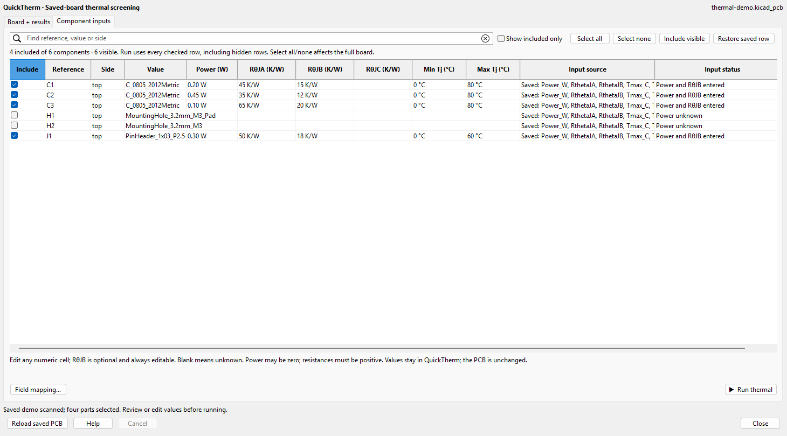
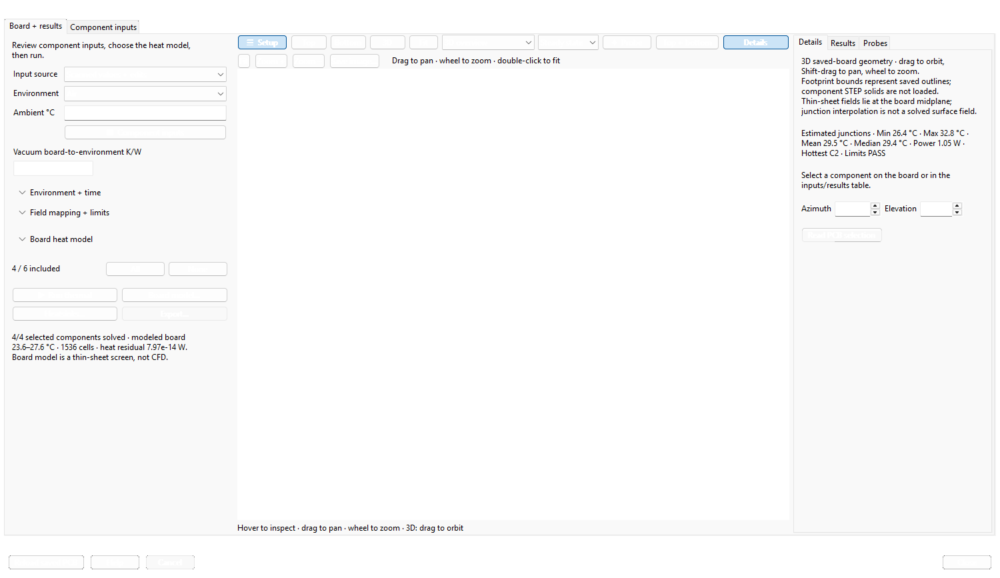
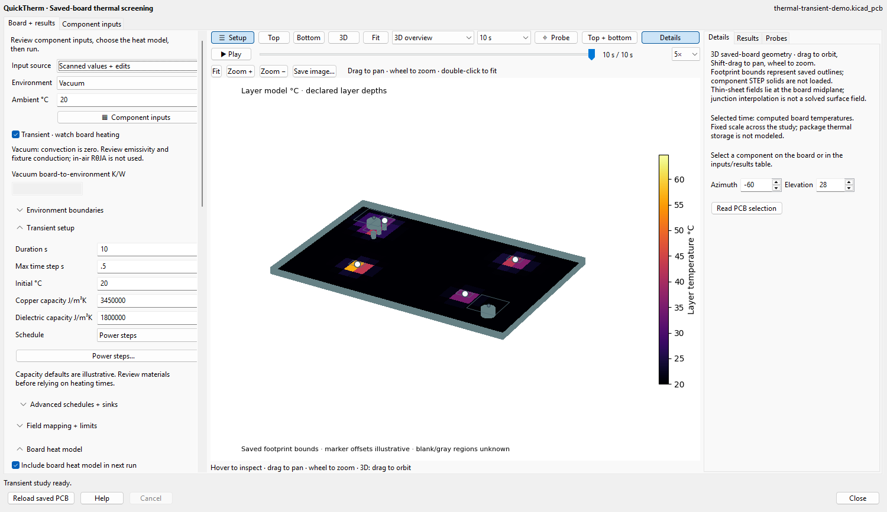

QuickTherm reads a saved KiCad PCB. Edits stay in the thermal workspace and do not modify the board. Unsaved PCB Editor changes are not included. Thermal screens depend on declared inputs and boundaries; they are not measurements or CFD.
The default Scanned values + edits uses saved inputs with explicit overrides. Saved fields only uses mapped saved properties and ignores table overrides. Input sources are retained with exported evidence.

Open Board + results, review environment and ambient temperature, then select the needed study.
| Study | Required inputs | Meaning |
|---|---|---|
| Independent air screen | Power and RθJA | Ambient + power × RθJA |
| Lumped vacuum screen | Power, RθJB and reviewed board-to-environment K/W | Shared board path plus package offset; in-air RθJA is not a vacuum path. |
| Virtual heatsink | Power, RθJC, declared sink/contact resistances | Explicit junction-to-case-to-sink path |
| Physical board study without virtual heatsinks | Power, reviewed materials and boundaries; RθJB optional | Board field can be solved without RθJA. Junction = modeled board site + power × RθJB. Without RθJB, package junction and limit status remain unknown. |
Board model… opens physical settings. Thin sheet uses saved thickness, effective in-plane conductivity, emissivity and airflow assumptions. The layered model needs saved stackup/copper, dielectric and copper conductivities, via plating and explicit contacts/boundaries. Enter measured or reviewed values; nothing is inferred from a part number or shape.
Forced air uses entered effective convection coefficients. Vacuum has zero convection and needs a radiation or fixture path. Potting uses conductivity, thickness and outer convection as a coating resistance. Sealed enclosure uses a fixed enclosure temperature and coefficient. These equivalent boundaries do not solve airflow fields or enclosure heating.
CalculiX 3D · fixed lower face is a separate steady-conduction solver. Locate the ccx executable and check setup. Gmsh may be installed in the private runtime. Enter conductivity, fixed lower-face temperature and mesh target. This bounded mode rejects unsupported vias, mounting contacts, virtual heatsinks, convection and radiation. The 3D display itself does not require a CalculiX solve.

The 3D viewport extrudes saved board contours with open cutouts/drills and interactive footprint bounds. STEP component solids and drill depth/span geometry are not loaded. A thin-sheet field appears once at the midplane; layered fields retain declared depths. Junction interpolation is distinct from a solved board field. Blank regions remain unknown. Scientific report plots retain coordinates and units.
Enable Transient · watch board heating on the board tab. The multilayer model is selected and Transient setup opens. Review saved stackup, conductivity, plating, emissivity and boundaries. Enter initial temperature, duration, maximum time step and copper/dielectric volumetric heat capacities. The displayed capacity defaults are illustrative assumptions to review; heatsinks need explicit J/K capacities.
Power steps… shows included parts and entered power. Set an initial multiplier, optional switch time and final multiplier. Multiplier 1 uses entered power; 0 turns it off. Leave switch time blank for constant power. Advanced schedules + sinks supports several [time_s, multiplier] points per reference. Choose held Power steps or interpolated Linear ramps. Integration lands on schedule events and retains short-pulse input energy.
After running, use Play/Pause, the time slider and speed control to watch computed heating/cooling in top, bottom or interactive 3D. A fixed temperature scale spans the study. Camera, selected components, probes, power and limit checks follow the selected computed frame. No intermediate solution temperatures are invented. Steady state selects the separate steady boundary solution. The offline HTML report also supports playback.

This transient capture uses the public demo with an assumed 35 µm / 1.53 mm / 35 µm stackup, illustrative copper/dielectric capacities of 3.45 / 1.8 MJ/(m³·K), emissivity 0.8 and initial/ambient temperature 20 °C. C2 switches off at 4 s. It is a computed thermal screen with interactive footprint bounds, not measured temperatures or imported STEP component solids.
Air uses the declared convection/radiation boundary. Forced air accepts an effective convection coefficient. Vacuum disables convection and retains radiation and fixture conduction; the board workflow requires nonzero emissivity or a fixture heat path to solve the steady boundary first. Airflow fields, residual gas and chamber view factors are unresolved.
Reduce the timestep and compare results before relying on peaks; stability is not convergence. Package die, potting and plated-barrel thermal storage are unresolved. Junction offsets use declared massless RθJB. The separate multi-board lumped RC transient CLI has its own inputs and limitations.
Zero power is an explicit value, not a replacement for missing power. RθJA, RθJB and RθJC are independent paths and are not substituted for one another. Enter per-part minimum/maximum limits or map saved limit properties. An unresolved junction or missing/invalid mapped bound gives UNKNOWN, not PASS. Compare mesh/time refinement and heat balance where applicable. Source hashes prevent using stale saved-board evidence.
The earlier steady screenshots use the public hypothetical thermal demo, four invented sources, 35 W/(m·K) effective conductivity, 0.8 emissivity and 10 m/s airflow. The transient screenshot has the distinct assumptions stated above. They demonstrate the native Windows/KiCad 10.0.6 workflow, not measured or qualified hardware. No private paths or user board data appear.
Further input contracts and numerical limitations: full guide, thermal model, CalculiX bridge, lumped transient model.